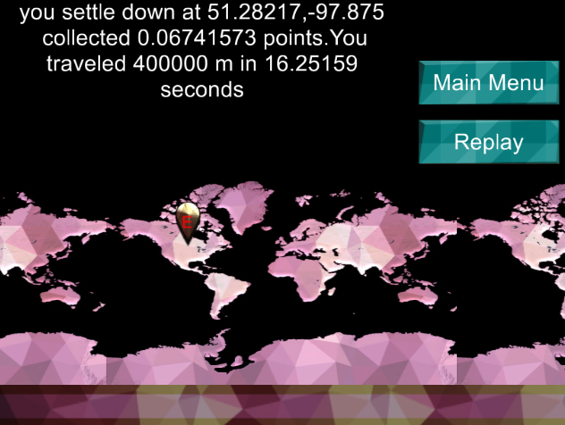
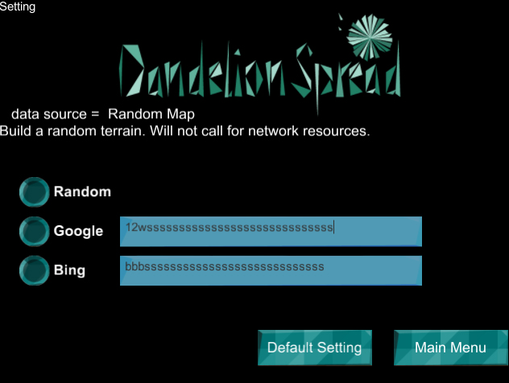
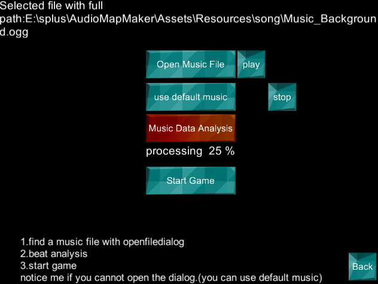
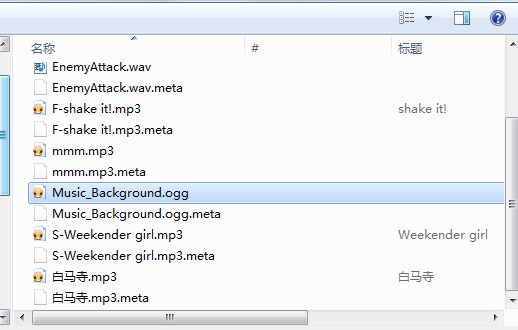

use your mouse to change the direction, seek after the target , or go wherever you like.
Your start location and end location will show on the map.
To get a higher score, hit the target at the right time. The cube will ture red when the time approach.

How to get an API key?
for google service: https://developers.google.com/maps/documentation/elevation/start for Bing service: https://www.bingmapsportal.com/Application if you just want tohave a try, use default setting with a public key is OK.
IF you got some network problem,try Random to make a cute lowpoly terrain.

How to use your own music?
Only the PC built can open up a file dialog in this version .SAD ;D.
and the Mp3 file is not supported ;D.Load Ogg and Wav instead.
I will fix it up in the future.